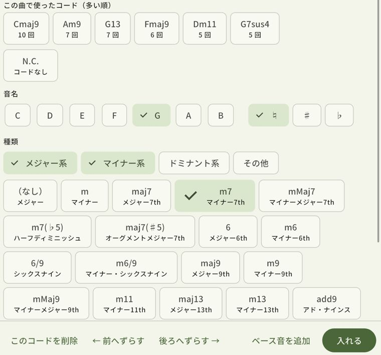
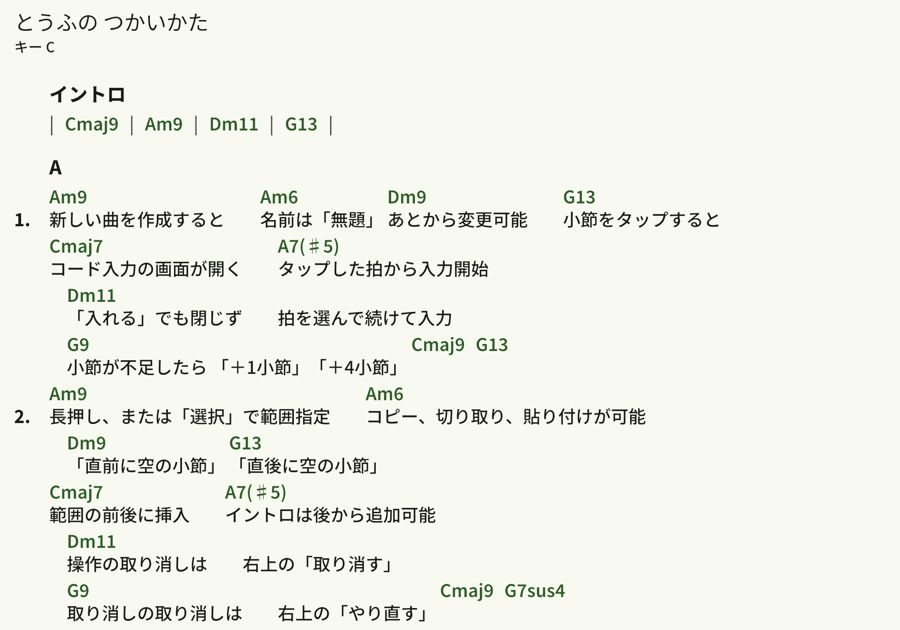
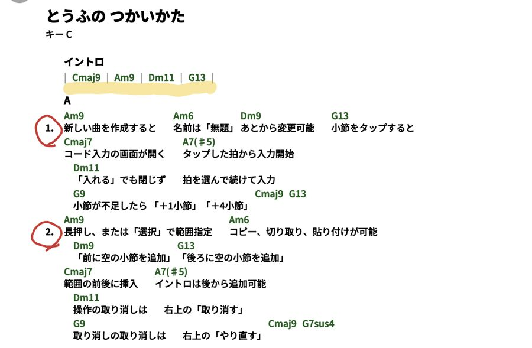
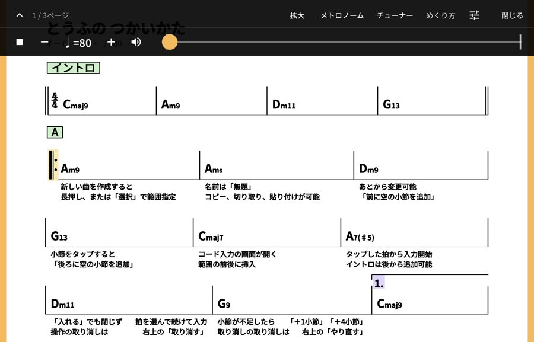

コード譜を、すばやく作って、そのまま弾く。
コードと歌詞だけの譜面を作る iPad のアプリです。五線譜は書きません。手元の楽譜を、そのまま書き写せます。
ダウンロードApp Store
無料・広告なし・iPad
コードと歌詞だけの譜面を作る iPad のアプリです。五線譜は書きません。手元の楽譜を、そのまま書き写せます。
− ＋ で、キーを変えてみてください。
4小節のコードが、その場で半音ずつ移調されます。アプリでも、1回押すだけです。
その曲で使ったコードは、多い順に並びます。同じコードは1回押すだけ。
ジャズ式（C-7、CΔ7）と標準表記（Cm7、Cmaj7）を、曲ごとに選べます。

歌詞を一度に貼り付けて、小節へ流し込めます。1番と2番は同じ小節に重ねて持てます。
PDF で出す形は4種類。コード＋歌詞、コードのみ、歌詞カード、歌詞の上にコードを載せる歌本スタイル。

PDF のファイル、カメラ、写真から取り込めます。ページの並べ替え、切り取り、回す、斜めを直す、もできます。
鉛筆の譜面の写真は「くっきりさせる」で読みやすく。演奏中に、ペンで丸や印を書き込めます。

フットペダル、画面の端を押す、横に払う、のどれかでめくれます。D.S. や to Coda を押すと、飛び先のページへ。
メトロノームは、音と、振れるメーターと、画面の縁の光で拍を見せます。チューナーもあります。

曲と PDF の楽譜を演奏する順に並べて、曲をまたいで続けてめくれます。その日だけ、曲ごとにキーを変えられます。